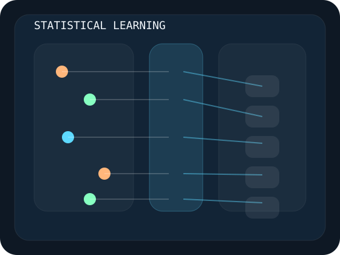
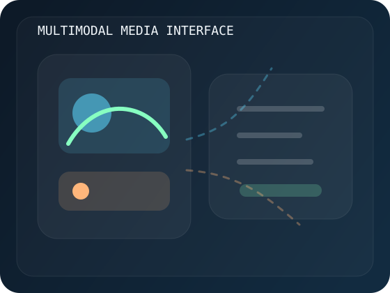
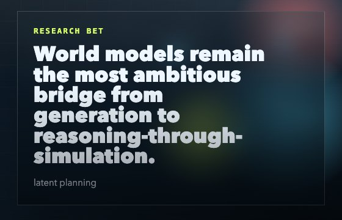
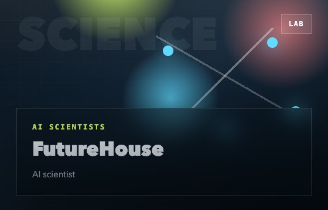
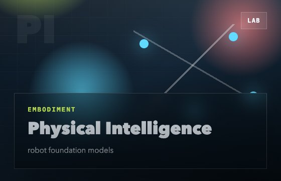

Problem formulation, learning, classical ML, and honest evaluation.
Ideas take root. Intelligence branches out.
Every breakthrough has roots.
Trace the ideas that shaped AI.
From rules and learning to models that generate, reason, and act.
THE LIVING HISTORY OF AI1950 — 2026 Select a branch to begin
Read the tree as a map of related ideas. Branches overlap; AI history has parallel traditions, setbacks, and rediscoveries.
Course development · test edition / 课程开发测试版本By Taotao Cai Reviewed 29 Oct 2026
Choose your way in
Explore an idea.
Then follow the evidence.
A visual starting point, a structured learning path, and a shelf of sources to go deeper.
01 / THE HISTORY
Follow the branches
Meet the turning points, understand what changed, and open the work behind each idea.
13 historical landmarks → 02 / THE LEARNING PATHBuild your understanding
Twelve modules connect foundations, hands-on experiments, and questions worth investigating.
12 modules · 4 optional projects → 03 / THE SOURCE LIBRARYGo to the original
Find papers, author explanations, documentation, and projects by topic or resource type.
82 selected resources →A field, not a single ladder
Explore the current landscape ↗Predict↗Represent↗Generate↗Reason↗Act↗Simulate
Learning path · 12 experimental modules
Understand it. Build it. Test it.
A suggested route from foundations to language models, agents, and evaluation. Each module pairs sources with an experiment and something concrete to show what you learned. Adapt the pace to your background.
Suggested background: basic Python, introductory probability, and an interest in testing ideas. No fixed timetable or enrolment is required.
Deep learning, transformers, pre-training, post-training, and reasoning.
Tool use, serving, open deployment, agent benchmarks, and failure logs.
Frontier claims, reproducibility, limitations, and a final evidence defense.
Module chapters
Foundations · modules 01–03
Read or watch · primary shelf
Seminar + lab
Evidence to keep
Optional studio projects · draft briefs
Four projects that build on each other.
Every brief asks for a working artifact, an evaluation trail, and a written account of limitations. Expand a row for milestones, submission requirements, and a 100-point rubric.
Development note: these are experimental project ideas with illustrative weights and rubrics. They are not official assessment briefs, enrolment requirements, or university grading policy.
Current briefing · October 2026
What changed since the last edition
Four developments worth adding to the map. Dates refer to the linked sources; inclusion is for study, not endorsement. Vendor claims are starting points for comparison, not settled truth.
01
16 Oct 2026 · Open models
Beam makes open-weight deployment part of the frontier conversation.
Reflection released Beam’s weights under Apache 2.0: a 501B-parameter MoE with 23B active parameters, built for coding, reasoning, and agentic work. The teaching opportunity is to examine self-hosting, fine-tuning, licensing, and evaluation—and to remember that open weights are not the same as open data.
02
13 Oct 2026 · Frontier systems
Gemini 4 Argon ties deep reasoning to multimodal, multi-step work.
Google’s release spans coding, document analysis, science, and cyber defense. Use it as a case study in comparing capability, cost, safeguards, and limitations across model cards—not as a shortcut to declaring one universal “best model.”
03
08 Sep 2026 · AI for science
A Navier–Stokes result puts formal verification in the loop.
OpenAI reports an analytical proof and Lean formalization for statements C and D of the official problem formulation, while explicitly not claiming the Millennium Prize. Beyond the headline, this is a useful lesson in multi-agent research, expert scrutiny, and machine-checked evidence.
04
Sep–Oct 2026 · Evaluation & safety
The model is only one part of the system being evaluated.
Recent system cards examine cyber capability, autonomy, prompt injection, safeguards, and agent behavior. The lesson: compare the task, harness, tools, and protections behind a result. A benchmark number without its evaluation setup is not a conclusion.
Reading rule: dated milestones ≠ current products ≠ research horizons. Follow the sources, inspect the evidence, and keep the uncertainty visible.
AI history · selected landmarks, 1950–2026
Ideas that changed the field.
From Turing’s question and symbolic reasoning to learning, attention, and tool-using systems. Select a landmark for the key idea, its limits, and the sources. Dates overlap because research traditions coexist.

Era
Loading timeline item
What changed
Why it matters
Frontier systems · current landscape
What is changing around the model?
Six case studies connect agents, generative media, open weights, and interactive environments. For each, separate the demonstrated capability from the research ambition and ask what evidence would persuade you.

Topic
Loading topic
How to read it
Why it matters now
LLM lifecycle
A model is only part of the system.
Follow the lifecycle: learn from data, shape useful behavior, then serve the model. Each stage has a different objective, engineering problem, and way to fail.
Stage
Loading LLM lifecycle stage
Engineering requirements
Failure modes
GPU memory, networking, parallelism, checkpointing, and fault recovery decide how quickly experiments become models.
Labels, reward models, verifiers, RL rollouts, safety evals, and agent environments turn raw models into behavior.
Schedulers, batching, KV cache reuse, quantization, and observability determine latency, cost, and reliability.
SGLang and RadixArk show that inference infrastructure is now a startup and open-source frontier, not a hidden backend detail.
Research landscape · selected labs and programs
Different bets on what comes next.
These labs and programs offer different answers to a shared question: what limits useful AI now? Compare automated research, human–AI collaboration, open-weight deployment, agent environments, spatial intelligence, scientific discovery, embodiment, and safety. Profiles are teaching cases, not rankings or endorsements; treat each linked claim as a position to investigate.
Curated library · primary sources first
Find the right paper, talk, document, or project.
Search by idea, combine a capability area with a resource type, then open the source itself. The shelf is deliberately selective: enough range to connect the course, not an endless feed.
No exact match
Try a broader idea or clear the filters.
Search checks titles, summaries, topics, and tags across the full shelf.
Watch
Watch an explanation unfold.
Some of the biggest shifts in AI are much easier to grasp visually than in prose. This layer pulls together explainers, talks, and demos that make the abstractions legible.
Research horizons · open questions
The next branch is an open question.
World models, AI scientists, and embodied systems are active research programs, not a guaranteed destination. Use these questions to examine the evidence: what transfers beyond a demo, what can be independently verified, and who remains responsible when a system acts?

01 / Interactive environmentsWhen does a generated world become a useful model of consequences?
Genie makes interactive-world research tangible, but its documented constraints still matter: limited action spaces, imperfect real-world fidelity, and difficult multi-agent interaction. The research test is not visual spectacle alone; it is controllability, consistency, and whether predicted consequences support better decisions.

02 / Automated researchWhat evidence should turn an AI-assisted result into a scientific discovery?
Research agents can search literature, write code, and propose experiments, but fluent output is not validation. Compare FutureHouse’s workflow approach with a reported Navier–Stokes proof that adds expert scrutiny and Lean formalization. Ask where replication, negative results, and human accountability enter the loop.

03 / EmbodimentWhich capabilities survive contact with the physical world?
Robots must handle incomplete perception, changing state, safety constraints, and actions that cannot be undone. Open robot policies make part of the stack inspectable, but generalization still needs testing across bodies, tasks, environments, and failure modes—not inferred from a single successful demonstration.